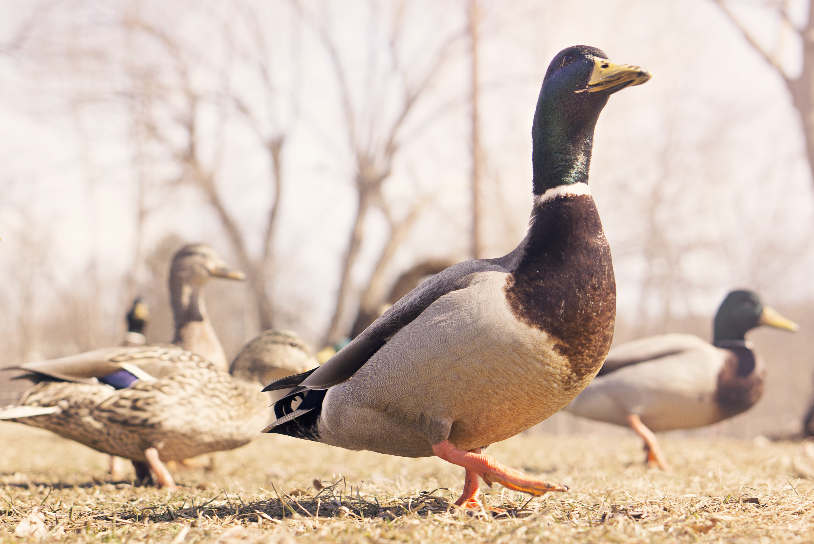
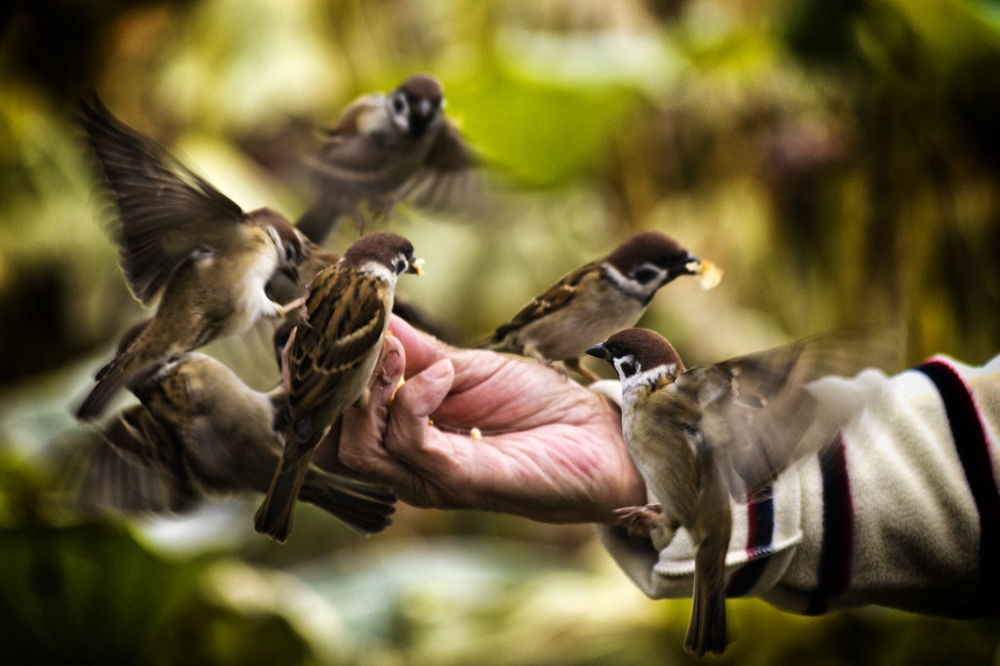
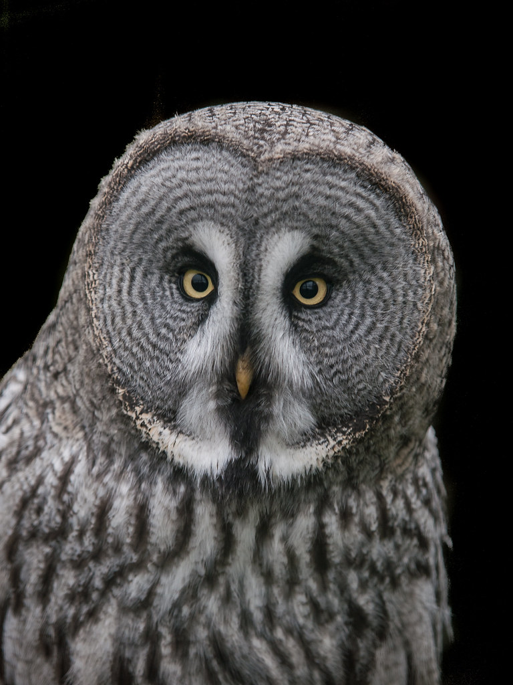
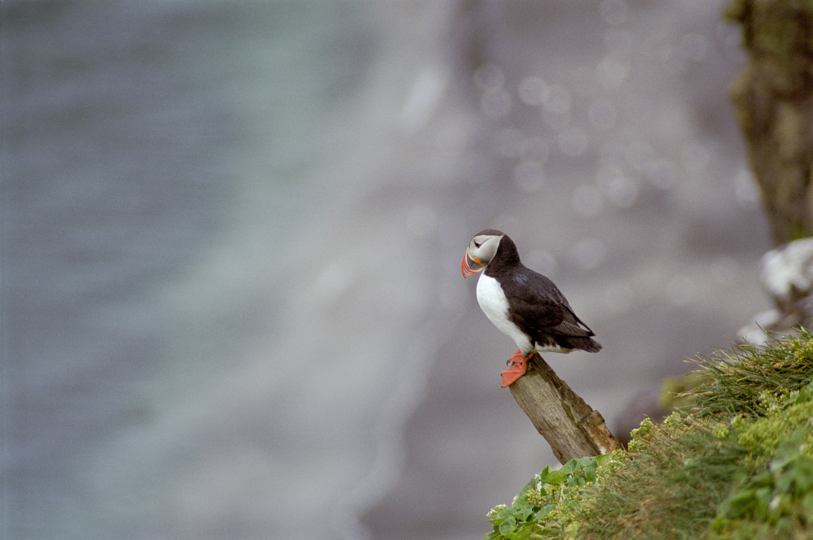
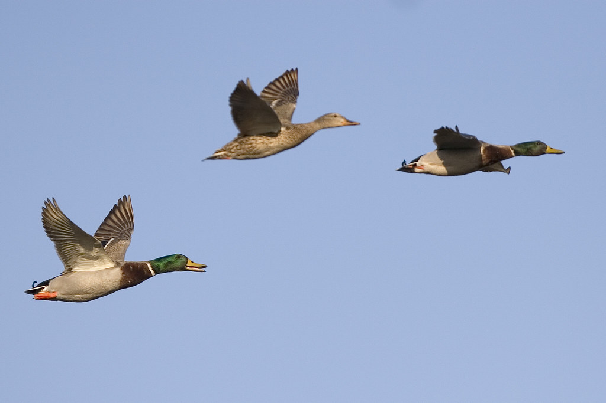
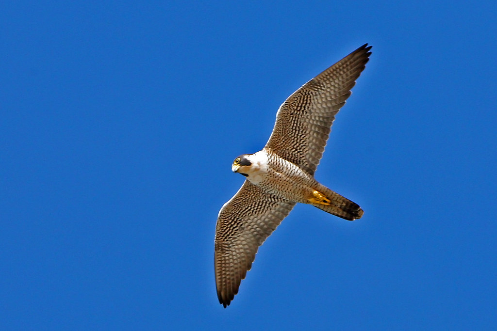
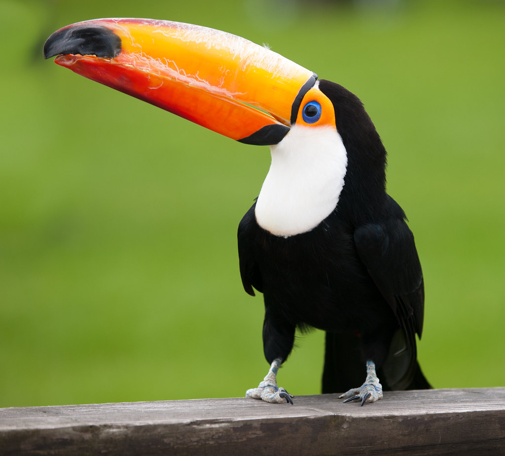

One of My Favorite Living Things...Birds!
Photo credit: Courtesy of photoeverywhere via imcreator.com

Photo credit: Ryan McGuire on imcreator.com

Photo credit: Diego Cambiaso on imcreator.com

Photo credit: William Warby on imcreator.com

Photo credit: Courtesy of photoeverywhere via imcreator.com

Photo credit: Mike Baird on imcreator.com

Photo credit: Mike Baird on imcreator.com

Photo credit: William Warby on imcreator.com